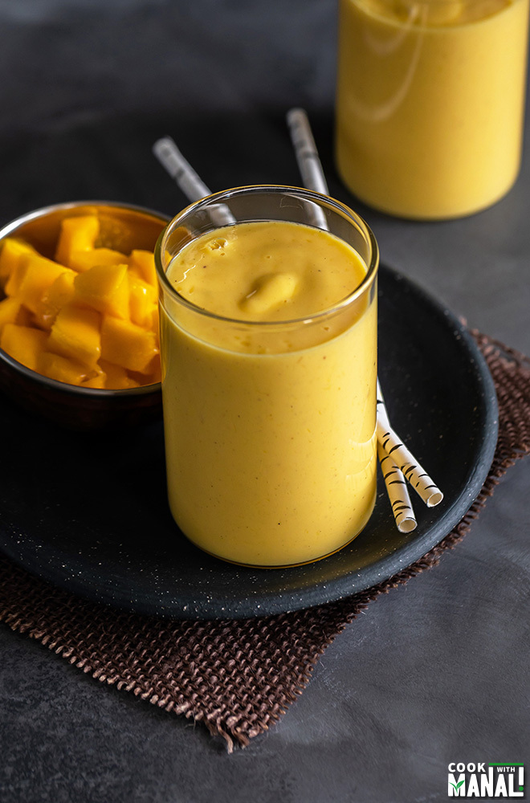

Mango Lassi recipe

Description
In the Indian subcontinent “Lassi” refers to any yogurt-based drink. The popular ones are sweet lassi which is sweetened with sugar and salty lassi which has salt and other spices in it.
Mango Lassi is another popular version that has sweet mangoes blended with yogurt.
Ingredients
- Milk
- Sugar
- Mango Puree
- Cardamom Powder
- Yogurt
- Saffron
Steps
- To a blender, add 1 cup of fresh mango puree. I pureed the flesh of 2 large sweet mangoes in a blender to get this fresh mango puree. You can also use canned mango pulp if you can’t find sweet mangoes or they are not in season.
- To the blender now add 1 cup yogurt. I have used plain whole milk yogurt here.
- Followed by 1/2 cup milk. I add this to thin out the lassi a bit. Also, add 2 to 3 tablespoons sugar and 1/4 teaspoon cardamom powder.
- Blend for around 60 seconds until everything is well combined. Pour the lassi into serving glasses and top with saffron strands (optional). You can also garnish with nuts.